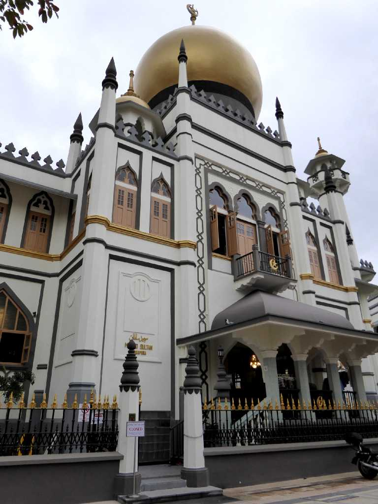
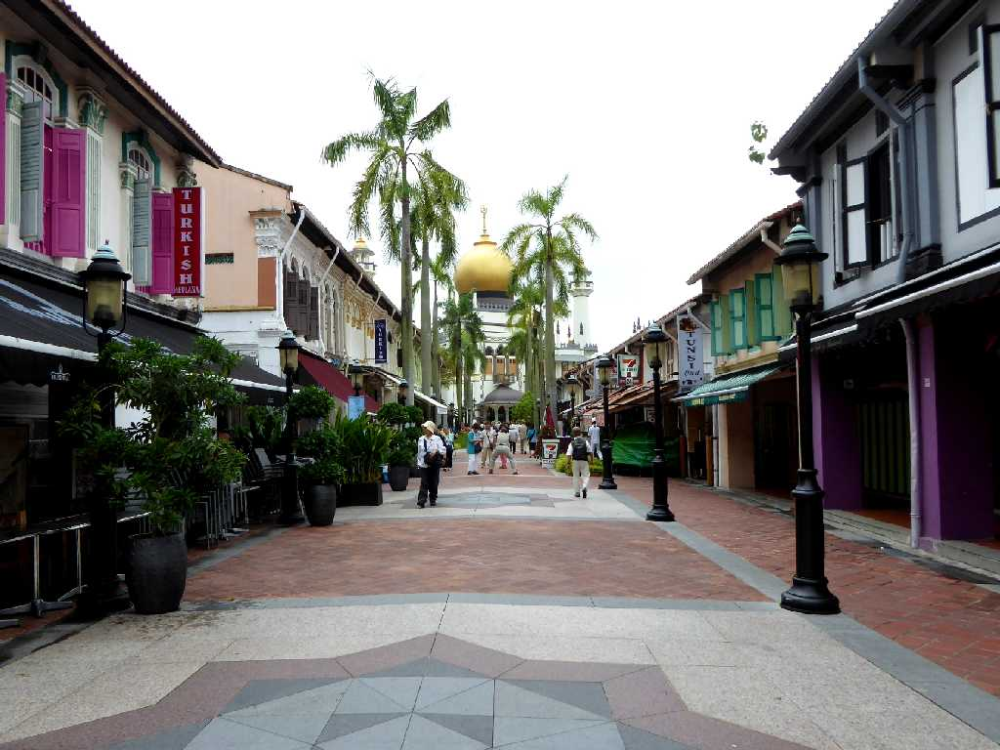
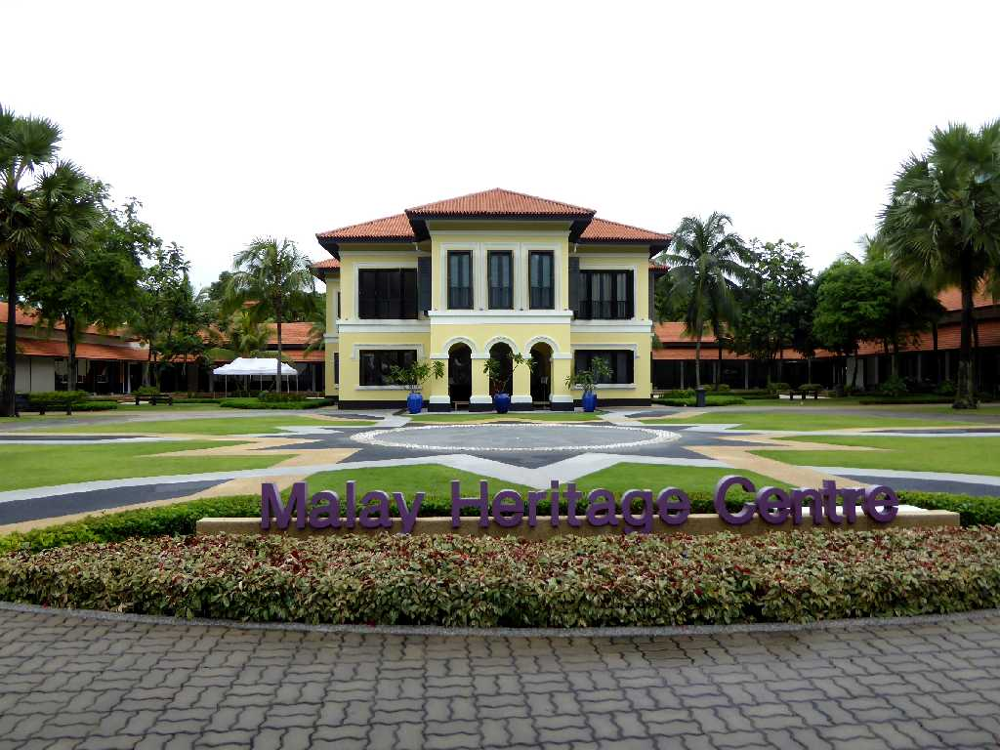
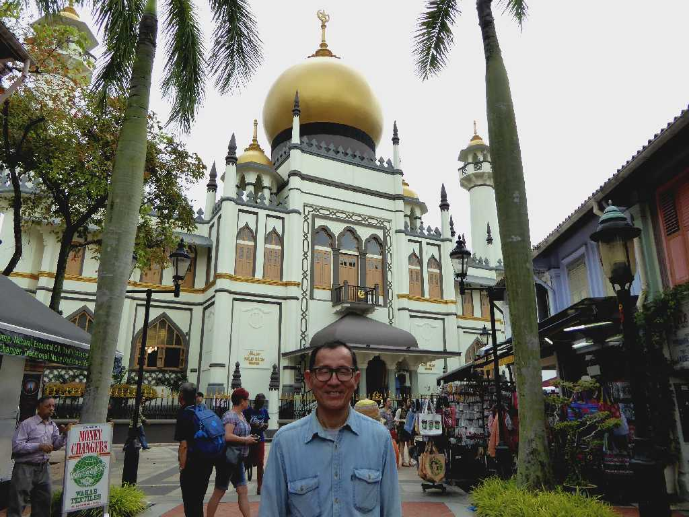

Masjid Sultan Mosque Singapore 新加坡 苏丹清真寺
シンガポールのアラブ街にある１８２４年にサルタンのフセインシャーによって創られたといわれるサルタンモスク

Masjid Sultan Mosque 苏丹清真寺
サルタンモスク前のアラブ街

Istana Kampong Glam 甘榜格南皇宫
マレー文化が残るカンポングラム宮殿

December 29 2015 Masjid Sultan Mosque 苏丹清真寺